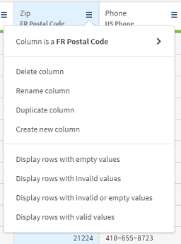
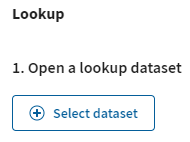

Talend Cloud Data Preparation to aplikacja self-service, która umożliwia pracownikom informacji skrócenie czasu pracy o kilka godzin, upraszczając i przyspieszając żmudny i czasochłonny proces przygotowania danych do analizy lub innych zadań związanych z danymi.
Talend Cloud Data Preparation działa na platformie Talend Cloud i oferuje możliwości klasy korporacyjnej wraz z łącznością z praktycznie dowolnym źródłem danych. Wspiera współpracę między ludźmi biznesu, którzy najlepiej znają dane, a centralnymi organizacjami, takimi jak IT czy zarządzanie ryzykiem, które definiują zasady i polityki dostępności oraz zarządzania danymi.
Zawiera:
- Integrację i katalogowanie.
- Odkrywanie danych i profilowanie.
- Czyszczenie, standaryzację i kształtowanie.
- Wzbogacanie i łączenie zestawów danych.
- Operacjonalizacja Talend Cloud Data Preparation.
Wyobraź sobie, że twoja firma jest dostawcą usług wypożyczania filmów i strumieniowego przesyłania wideo.
W przykładach opisanych w tym rozdziale musisz oczyścić plik zawierający dane o twoich klientach, takie jak ich imiona, wiek, dane kontaktowe, daty subskrypcji lub liczba wypożyczeń. Chcesz, aby te dane były bardziej przejrzyste i łatwiejsze w obsłudze.
Ten scenariusz opisuje różnorodne działania, które możesz wykonać na pliku klienta, aby usunąć lub skorygować nieścisłości i poprawić jakość danych.
Pierwszym krokiem do korzystania z Talend Cloud Data Preparation jest dostęp i zalogowanie się do aplikacji internetowej. Aby zalogować się do Talend Cloud Data Preparation i zacząć z niego korzystać, postępuj w następujący sposób:
Kroki
- Zaloguj się do swojego Talend Data Fabric Trial (dane w mailu od`t)
- (TODO : przejdź Talend Data Experience => Try yourself)
- Aby uzyskać dostęp do strony głównej Talend Cloud Data Preparation, możesz:
- Kliknij na przycisku "Launch" na dole paska "Talend Data Preparation"
- Kliknij ikonę "Select an app" i wybierz "Data Preparation" z listy dostępnych aplikacji.
Wynik
Osiągnąłeś stronę główną Talend Cloud Data Preparation.
Teraz zaimportujesz plik zawierający dane klientów i utworzysz swoje pierwsze przygotowanie.
Po zalogowaniu się do Talend Cloud Data Preparation, zostaniesz przekierowany do widoku Przygotowania.
Ten widok pokazuje wszystkie twoje przygotowania, innymi słowy zbiory danych, nad którymi rozpocząłeś wykonywanie operacji. Na razie jest pusty, ale to właśnie tutaj zostanie zapisana twoja praca nad danymi klientów. W tym widoku możesz również dodawać nowe przygotowania i organizować je w foldery.
Aby zaimportować plik klienta zawierający surowe dane, postępuj w następujący sposób:
Zanim zaczniesz
Pobierz plik: customers.xlsx.
Kroki
- Z menu lewego panelu wybierz opcję Zbiory danych, aby otworzyć listę zbiorów danych, która w tym momencie również jest pusta.
- Aby zaimportować customers.xlsx które pobrałeś wcześniej, możesz:
- Kliknij przycisk Usuń plik lub przeglądaj, aby przeglądać pliki i wybrać zbiór danych.
- Bezpośrednio przeciągnij i upuść zbiór danych na ekranie Przygotowanie danych w chmurze Talend.
- Zostanie otwarta karta Przegląd, w której możesz wyświetlić informacje o zestawie danych.
- Otwórz zakładkę Konfiguruj po lewej stronie ekranu.
- W polu Nazwa zbioru danych wprowadź
Klienci. - Pole Połączenie jest już wypełnione.
Ponieważ jest to Twój pierwszy import lokalnego zbioru danych, w trakcie tego procesu zostanie utworzone połączenie typu połączenie lokalne. To podstawowe połączenie zostanie użyte do przesłania wszystkich lokalnych zbiorów danych. - W sekcji Konfiguracja formatu formularza kliknij przycisk Automatyczne wykrywanie, aby automatycznie wypełnić informacje o formacie.
- Kliknij przycisk Wyświetl przykład, aby wyświetlić podgląd pierwszych 50 wierszy zbioru danych.
- Kliknij opcję Sprawdź, aby zakończyć tworzenie zestawu danych.
- Z menu lewego panelu wybierz Przygotowania i kliknij przycisk Dodaj przygotowanie.
- W otwartym panelu Dodaj przygotowanie wybierz utworzony wcześniej zbiór danych Klienci.
Pole Nazwa preparatu wypełnia się automatycznie, istnieje jednak możliwość zmiany nazwy preparatu. W tym przykładziePrzygotowanie klientówJest używane. - Kliknij opcję Prześlij.
Wyniki
Twój zbiór danych otwiera się w postaci preparatu z pustą recepturą. Twoje dane nie zostały jeszcze zmodyfikowane, ale zostały zapisane jako preparat, na którym możesz rozpocząć stosowanie etapów przygotowawczych.
Ponieważ zaimportowałeś plik klienci.xlsx zbioru danych i utworzyłeś odpowiedni preparat za pomocą przycisku Dodaj przygotowanie, każda zmiana dokonana w Przygotowaniu Klienta zostanie automatycznie zapisana. Jeśli chodzi o zaimportowany surowy zbiór danych, można go wyświetlić w widoku Zestawy danych, a dane pozostaną niezmienione.
Teraz, gdy środowisko pracy jest już skonfigurowane, możesz rozpocząć pracę nad danymi, aby je oczyścić i ulepszyć.
Przykłady podane w tym rozdziale zakładają, że:
- Pobrałeś plik klienci.xlsx plik.
- Otworzyłeś wcześniej utworzone przygotowanie Klienta.
W tym scenariuszu opisano różne operacje czyszczenia i formatowania, które można wykonać na danych klientów.
Pierwszą czynnością będzie naprawienie kolumny zawierającej imiona klientów.
Można to zauważyć w klienci.xlsx pliku, występują pewne niespójności między nazwami w kolumnach Imię i Nazwisko. Niektóre zaczynają się od dużej litery, inne są w całości pisane małymi literami, a jeszcze inne są w całości pisane wielkimi literami.
Aby zharmonizować styl wszystkich komórek kolumny, wykonaj następujące czynności:
Kroki
- Kliknij nagłówek kolumny Imię, aby wybrać jej zawartość.
- Trzymając naciśnięty klawisz Ctrl, kliknij nagłówek kolumny Nazwisko.
Obie kolumny są teraz wybrane i będziesz je modyfikować jednocześnie. - W panelu Funkcje znajdującym się w prawym górnym rogu ekranu znajdź na liście funkcji opcję Zmień na wielkość liter i kliknij ją.
W tym polu znajdują się wszystkie funkcje dostępne do zastosowania na Twoich danych. Wyszukaj żądaną funkcję lub wybierz jedną z sugerowanych. Użyj przycisku Podgląd, aby zobaczyć wpływ, jaki będzie to miało na Twoje dane. - Kliknij przycisk Prześlij, aby zastosować funkcję w obu kolumnach.
Wszystkie nazwy zaczynają się teraz wielką literą, a pozostałe małe.
Jeśli w Twoich danych zostały omyłkowo wprowadzone spacje, możesz zastosować funkcję Usuń znaki końcowe i początkowe, aby je wyczyścić.
Jest jeszcze trochę do zrobienia w kolumnie Imię i Nazwisko. Rzeczywiście, przed lub za niektórymi nazwami można zobaczyć paski w paski.
Aby usunąć spacje z komórek, wykonaj następujące czynności:
Kroki
- Kliknij nagłówek kolumny Imię, aby wybrać jej zawartość.
- Trzymając wciśnięty przycisk Ctrl, kliknij nagłówek kolumny Nazwisko.
Dwie kolumny są teraz zaznaczone i możesz zastosować funkcję do obu kolumn w jednej akcji. - Na liście funkcji kliknij opcję Usuń znaki końcowe i początkowe, aby otworzyć opcje powiązanej funkcji.
- Z listy rozwijanej Znak dopełniający wybierz białe znaki i kliknij Prześlij.
Pasiaste pola zniknęły z komórek w obu kolumnach.
Przepis w Talend Cloud Data Przygotowanie, podobnie jak każdy przepis kulinarny, to lista etapów przygotowania zastosowanych do Twoich danych.
Po wykonaniu czterech czynności związanych z przygotowaniem mogłeś zauważyć, że każdy krok został wypisany po lewej stronie ekranu. Oto przepis na Twoje przygotowanie. Każda funkcja zastosowana na Twoich danych trafia do przepisu.
Na potrzeby tego przykładu będziesz manipulował różnymi elementami składającymi się na twoje przygotowanie.
Aby edytować przygotowanie, wykonaj następujące czynności:
Kroki
- Aby wyłączyć konkretną linię przepisu, na przykład trzecią, kliknij zielony okrągły przycisk po prawej stronie.
Ponieważ każdy etap przygotowania opiera się na poprzednim, wyłączenie jednej linii przepisu powoduje także wyłączenie kolejnych.
Ta operacja pozwala sprawdzić stan danych przed zastosowaniem funkcji. W tym przypadku widać, że ponownie można znaleźć spacje w kolumnach Imię i Nazwisko. - Kliknij zielony przycisk obok czwartej linii przepisu, aby ponownie włączyć efekty dwóch ostatnich funkcji.
Możesz użyć tej funkcji, aby wyłączyć cały przepis i zobaczyć dane w oryginalnym stanie. Może to być przydatne, jeśli chcesz porównać dane przed i po. - Aby usunąć linię przepisu, na przykład ostatnią, najedź kursorem na tę linię i kliknij ikonę kosza po prawej stronie.
W przeciwieństwie do przycisku wyłączania, którego używałeś wcześniej, ikona kosza całkowicie usuwa linię z przepisu. - Kliknij przycisk cofania w prawej górnej części ekranu.
Wyniki
Twoje przygotowanie powróciło do stanu, w jakim było na początku tej procedury. Pamiętaj, że każdą modyfikację można cofnąć. Wiesz już, jak edycja przepisu może wpłynąć na przygotowanie.
Możesz zmienić typ semantyczny danych, aby mieć pewność, że typ danych w kolumnie odpowiada rzeczywistym wartościom.
Talend Cloud Data Przygotowanie automatycznie sugeruje typ semantyczny Twoich danych. Ten typ jest określony pod nagłówkiem każdej kolumny. W kolumnie Kod pocztowy widać, że kody pocztowe w USA zostały pomylone z francuskimi, ponieważ mają tę samą liczbę cyfr. Teraz ustawisz typ semantyczny kolumny na kod pocztowy w USA.
Aby zmodyfikować typ semantyczny kolumny, wykonaj następujące czynności:
Kroki
- Kliknij ikonę opcji w nagłówku kolumny Zip.
 - W menu kliknij Kolumna to kod pocztowy FR.
Zostanie otwarta lista sugerowanych typów semantycznych. - Kliknij opcję Kod pocztowy Stanów Zjednoczonych.
Wynik
Typ semantyczny kolumny Zip jest teraz ustawiony na Kod pocztowy USA.
Mówiąc bardziej ogólnie, jeśli typ semantyczny zaproponowany przez Talend Cloud Data Przygotowanie dla jednej kolumny nie jest pożądany, możesz go w każdej chwili zmienić, w oparciu o własne doświadczenia.
Najszybszym sposobem zidentyfikowania nieprawidłowych danych jest spojrzenie na pasek jakości.
Pod każdą kolumną znajduje się pasek jakości, który wyświetla liczbę pól zawierających poprawne dane, nieprawidłowe dane lub puste pola. Każda kategoria jest reprezentowana przez kolor:
- Zielony dla danych zgodnych z formatem komórki
- Szary dla pustych komórek
- Czerwony w przypadku danych, które nie pasują do formatu komórki
Kliknij dowolny kolor, aby zaznaczyć, usunąć lub wyczyścić komórki zawierające dane w nieprawidłowym formacie. Najechanie kursorem na kolory pozwala wyświetlić dokładną liczbę wierszy dla każdej kategorii, a także procent, jaki reprezentuje w kolumnie.
Patrząc na pasek jakości pod nagłówkiem kolumny E-mail, możesz zobaczyć, że wśród danych znajdują się puste komórki i nieprawidłowe wartości. Zamierzasz je usunąć.
Aby użyć paska jakości do usunięcia linii zawierających nieprawidłowe komórki, wykonaj następujące czynności:
Kroki
- Kliknij szarą część paska jakości w nagłówku kolumny E-mail.
Otworzy się menu rozwijane. - Kliknij opcję Usuń wiersze z pustymi komórkami.
Puste komórki z kolumn E-mail zostały usunięte i pozostały tylko nieprawidłowe wartości, reprezentowane przez czerwony pasek. - Powtórz dwa ostatnie kroki, ale tym razem kliknij czerwoną część paska jakości i wybierz opcję Usuń wiersze z nieprawidłowymi komórkami.
Kolumna E-mail została teraz oczyszczona ze wszystkich nieprawidłowych danych i pustych komórek. - Użyj paska jakości, aby usunąć nieprawidłowe komórki z kolumn Kod pocztowy i Telefon.
Wynik
Jedyną pozostałą kolumną z nieprawidłowymi danymi jest teraz Stan, ale będziesz ją traktować w inny sposób.
Funkcja wyszukiwania umożliwia pobranie danych z istniejącego zbioru danych i dodanie ich do preparatu.
W tym przykładzie założono, że:
- Pobrałeś i rozpakowałeś plikstany.zip plik.
- Dodałeś States.csv do swojej listy zbiorów danych w Talend Cloud Data Przygotowanie. Aby uzyskać więcej informacji na temat importowania zestawu danych, zobaczOtwieranie zbioru danych z pliku lokalnego.
W tym przykładzie chcesz dodać więcej informacji geograficznych o swoich klientach dzięki posiadanemu plikowi referencyjnemu: zbiorowi danych States. Ten zbiór danych zawiera listę kodów stanów USA i odpowiadających im regionów. Będziesz dynamicznie wykorzystywać dane z tego zbioru danych w celu uzupełnienia swoich przygotowań. Umożliwi to dodanie informacji o regionie subskrypcji każdego klienta na podstawie jego kodu stanu.
Aby połączyć w swoim przygotowaniu dane z innego zbioru danych, wykonaj następujące czynności:
Kroki
- Otwórz swoje przygotowanie.
- Kliknij przycisk wyszukiwania w prawej górnej części ekranu, aby otworzyć panel wyszukiwania.
- Kliknij opcję Wybierz zbiór danych, aby wybrać istniejący zbiór danych.
 - Wybierz zbiór danych, którego chcesz użyć do wyszukiwania (w tym przykładzie jest to zbiór danych stanów).
- Kliknij Wybierz.
- Z listy rozwijanej Bieżący zestaw danych przygotowania i wyszukiwania wybierz kolumny pasujące do głównego przygotowania i referencyjnego zestawu danych, czyli w tym przykładzie kolumny Stan i Stan.
Aby przeprowadzić wyszukiwanie, w przygotowaniu i zestawie danych, który chcesz połączyć, musi znajdować się co najmniej jedna kolumna z pasującymi danymi, w tym przypadku kody stanów USA. - Z listy rozwijanej Kolumny do dodania wybierz kolumnę Region, aby dodać ją do bieżącego zbioru danych.
- Wybierz, czy chcesz zastosować te zmiany tylko w przefiltrowanych wierszach, czy we wszystkich wierszach.
- Kliknij przycisk Prześlij, aby zastosować zmiany i dodać kolumnę Region do swojego przygotowania.
Wynik
Twoje dane zawierają teraz nową informację o regionie subskrypcji Twojego klienta, którą pobrałeś z pliku referencyjnego.
Zastosowanie określonej wartości do wielu komórek jednocześnie może zaoszczędzić dużo czasu podczas poprawiania nieprawidłowych komórek.
Kolumna Stan jest ostatnią kolumną zawierającą nieprawidłowe dane. Ta kolumna zawiera listę stanów, z których klienci wypożyczyli film, przy użyciu dwuliterowego kodu. Można zauważyć, że wśród wszystkich innych kodów stanów USA wystąpienia Teksasu wyróżniają się jako błędy.
Zamiast po prostu usuwać odpowiednie linie za pomocą paska jakości, tak jak to robiłeś wcześniej, poprawisz jedną z nieprawidłowych komórek i zastosujesz nową wartość do wszystkich komórek zawierających ten sam błąd. Aby zastąpić wystąpienia Teksasu poprawną wartością, wykonaj następujące czynności:
Kroki
- W kolumnie Stan kliknij dwukrotnie jedno z wystąpień stanu Teksas.
Możesz teraz edytować zawartość komórki. Po usunięciu poprzedniej wartości otworzy się lista rozwijana sugerująca wszystkie wartości wchodzące w składKodeks stanu USAtyp semantyczny oparty na słowniku, posortowany alfabetycznie. - Ponieważ kod Teksasu nie jest wyświetlany w pierwszych wynikach, zacznij pisać
T, aby zobaczyć, jakie pojawią się wyniki.
Sugestie będą coraz dokładniejsze w miarę pisania. Jeśli jednak oczekiwaną wartość można już znaleźć na oryginalnej liście, możesz ją bezpośrednio wybrać. - Z tej udoskonalonej listy wybierz kod stanu odpowiadający Teksasowi, czyli TX.
- Zaznacz pole wyboru Zastosuj do identycznych wartości.
- Kliknij opcję Prześlij.
Wynik
Wszystkie wystąpienia stanu Teksas zostały zastąpione poprawnym kodem stanu TX, a pasek jakości wskazuje teraz, że wszystkie dane w kolumnie Stan są poprawne.
Należy pamiętać, że po wybraniu kolumny Stan dane są wizualizowane w formie interaktywnej mapy Stanów Zjednoczonych w panelu Profilowanie danych.
W Talend Cloud Data Przygotowanie każdy etap przygotowania, który zastosujesz na swoich danych, opiera się na poprzednim. W rezultacie, jeśli zastosowałeś już wiele kroków przygotowawczych do swoich danych, ale na początku zapomniałeś o jednej małej zmianie, nie osiągnąłbyś oczekiwanego rezultatu.
W przypadku przygotowania składającego się z wielu etapów istnieje możliwość zmiany kolejności etapów przygotowania, tak aby zmiany weszły w życie we właściwej kolejności.
We wcześniejszych krokach tuż przed wprowadzeniem poprawki w tej kolumnie dokonano wyszukiwania w kolumnie Stan, ponieważ wpis stanu Teksas miał nieprawidłowy format. Ponieważ ostatnia zmiana w kolumnie Stan została wprowadzona po wyszukiwaniu, w kolumnie Region dodanej podczas wyszukiwania brakuje obecnie niektórych informacji.
Zamierzasz wykonać krok wyszukiwania i umieścić go jako ostatni etap przygotowań, aby upewnić się, że obejmuje wszystkie stany.
Kroki
- Wskaż myszką krok wyszukiwania.
- Aby przenieść krok wyszukiwania z przedostatniej pozycji na ostatnią, możesz:
- Przeciągnij krok przepisu i upuść go na dół przepisu.
szara linia pokazuje, gdzie przepis zostanie umieszczony. - Możesz też kliknąć strzałkę w dół po lewej stronie kroku przepisu, aby przesunąć go w dół.
Wynik
Twoje przygotowanie zostanie automatycznie zaktualizowane o prawidłową sekwencję działań, a kolumna Region obejmuje teraz Teksas.
Łatwym sposobem zastosowania filtra do danych jest użycie wykresów przedstawiających graficzną reprezentację danych.
Do izolowania wartości można używać filtrów, ułatwiając w ten sposób zastosowanie funkcji do określonej kategorii danych. Jednym z rozwiązań jest użycie paska jakości do wybrania pustych lub nieprawidłowych komórek, ale w tym przykładzie dowiesz się, jak filtrować dane za pomocą wykresów znajdujących się w prawym dolnym rogu interfejsu. W Talend Cloud Data Przygotowanie statystyki dla każdej kolumny dostępne są w formie wykresu.
Wyobraź sobie, że chcesz lepiej zrozumieć rozkład wiekowy swoich klientów i zidentyfikować tych, którzy nie ukończyli 18 lat. Aby odfiltrować tę konkretną grupę klientów za pomocą wykresu, wykonaj następujące czynności:
Kroki
- Kliknij nagłówek kolumny Wiek, aby wybrać jej zawartość.
Graficzna reprezentacja zawartości kolumny wyświetlana jest w formie poziomego wykresu słupkowego, w prawym dolnym rogu ekranu. Każdy słupek reprezentuje liczbę wystąpień danej grupy wiekowej. Najechanie kursorem na każdy słupek powoduje wyświetlenie informacji o danych. - Na wykresie kliknij słupek poniżej 18 lat.
Twój preparat wyświetla teraz tylko linie odpowiadające klientom poniżej 18 roku życia. W górnej części ekranu widać, że filtrWiek = poniżej 18 latjest obecnie aktywny. Masz teraz możliwość zastosowania funkcji tylko do tej grupy klientów. - Aby wyczyścić filtr, po prostu kliknij ikonę x po prawej stronie filtra.
Wynik
Przygotowanie wyświetla teraz ponownie pełną listę klientów.
Obliczanie wartości bezwzględnej liczby jest jedną z różnych funkcji matematycznych dostępnych do wykorzystania na danych.
Jeśli przyjrzysz się bliżej kolumnie Liczba_wynajmów, zauważysz, że niektóre liczby mają wartość ujemną.
Komórki te nie są oznaczone jako nieprawidłowe na pasku jakości, ponieważ nadal pasują do typu semantycznego ustawionego automatycznie jakoliczba całkowita. Niemniej jednak są to dane bezużyteczne. W rezultacie zastosujesz funkcję usuwającą znak ujemny dla wszystkich tych liczb.
Aby obliczyć wartość bezwzględną swoich danych, wykonaj następujące czynności:
Kroki
- Kliknij nagłówek kolumny Liczba_wynajmów, aby wybrać jej zawartość.
W polu statystyk wyraźnie widać, że niektóre wartości mieszczą się w przedziale od -10 do 0. - Na pionowym wykresie słupkowym w prawym dolnym rogu ekranu kliknij pierwszy słupek od lewej.
Ten słupek reprezentuje wszystkie wystąpienia wartości równych lub mniejszych od 0.
Do Twoich danych zastosowano teraz filtr. Twoje przygotowanie wyświetla teraz tylko linie o wartości równej lub mniejszej od zera dla liczby wypożyczeń. Możesz teraz zastosować funkcję tylko do tych komórek. - Na liście funkcji, przed opcją Zastosuj zmiany do, wybierz przycisk opcji Filtrowane wiersze.
- Na liście funkcji kliknij opcję Oblicz wartość bezwzględną.
Wszystkie wartości ujemne zostały przeliczone. - Aby wyczyścić filtr, po prostu kliknij ikonę x po prawej stronie filtra.
Wynik
Twoje przygotowanie ponownie wyświetla wszystkie dane. Jeśli jeszcze raz spojrzysz na pole statystyk w kolumnie Liczba_wynajmów, zobaczysz, że minimalna wartość wynosi teraz 0 zamiast -10. Poprawiłeś w ten sposób jakość i użyteczność swoich danych.
Przygotowanie danych w chmurze Talend obsługuje wiele różnych formatów daty, które możesz zharmonizować, aby poprawić swoje dane.
W kolumnie SubDate widać, że nawet jeśli dane uwzględniają typ semantyczny ustawiony jako data, nie mają one tylko jednego formatu daty. W konsekwencji standardy europejskie i amerykańskie,- I/ współistnieć.
Zamierzasz zharmonizować kolumnę SubDate i ustawić tylko jeden format daty dla wszystkich swoich danych. Aby to zrobić:
Kroki
- Kliknij nagłówek kolumny SubDate, aby wybrać jej zawartość.
- W polu statystyk w prawym dolnym rogu kliknij Wzór.
Ta zakładka zapewnia lepszy wgląd w różne aktualnie używane formaty daty. Niektóre daty są zgodne ze standardem europejskim, inne zaś według formatu amerykańskiego. W każdym razie widać, żedd-MMM-rrrrformat jest najczęściej używany. - Aby ujednolicić format daty, kliknij opcję Zmień format daty... na liście funkcji.
Otworzy się menu, w którym możesz określić aktualny format daty i żądany. - Na liście rozwijanej Bieżący format pozostaw opcję Nie wiem, najlepiej przypuszczam.
- Z listy rozwijanej Nowy format wybierz opcję Inny.
- W polu Twój format wpisz
dd-MMM-rrrr.
Thedd-MMM-rrrrformat jest najbardziej odpowiedni, ponieważ zawiera już najwięcej wystąpień.
Wynik
Kolumna SubDate ma teraz tylko jeden format daty, co ułatwia jej odczytanie. Możesz także zauważyć, że w przepisie podświetlona jest ostatnia czynność, a nawet można ponownie zmodyfikować format daty bezpośrednio z poziomu przepisu.
Wyszukiwanie i grupowanie podobnych tekstów można wykorzystać do ujednolicenia treści z niewielkimi różnicami.
W klienci.xlsx w pliku znajdują się informacje o zawodzie Twoich klientów. Niektóre wartości są do siebie dość podobne, na przykład student/absolwent i student. Sposobem na poprawę czytelności, a tym samym jakości danych, byłoby ponowne zgrupowanie niektórych z tych wartości.
Aby znaleźć i pogrupować podobne treści, wykonaj następujące czynności:
Kroki
- Kliknij nagłówek kolumny Zawód, aby wybrać jej zawartość.
W polu statystyk możesz sprawdzić, czy zdarzają się tytuły stanowisk, które różnią się tylko nieznacznie. - Na liście funkcji wybierz Znajdź i pogrupuj podobny tekst....
Otworzy się menu Znajdź i grupuj podobny tekst.
Wszystkie podobne zawody są zgrupowane w drugiej kolumnie. W tym przypadku student/absolwent i student. Trzecia kolumna sugeruje tytuł zawodu, który mógłby zastąpić wartości z drugiej kolumny. Możesz wybrać inną wartość z listy rozwijanej lub wpisać zupełnie nową. Wyczyść pola wyboru przed wartościami lub grupami wartości, które chcesz pozostawić bez zmian. - Z listy rozwijanej w trzeciej kolumnie wybierz Student.
- Kliknij opcję Prześlij.
Wynik
Wszystkie wystąpienia College/Grad Student i College Student zostały przegrupowane w ramach College Student, nowej zharmonizowanej wartości.
Aby udostępnić swoje przygotowanie innym członkom projektu, możesz skorzystać z funkcji udostępniania.
W tym przykładzie założono, że Ty i inni użytkownicy jesteście zarejestrowanymi użytkownikami Talend Cloud Data Preparation.
Użytkownicy lub grupy użytkowników z Twojej organizacji będą mogli otwierać i edytować Twoje preparaty. Udostępnianie możliwe jest na poziomie folderu, a nie bezpośrednio na poziomie przygotowania.
Aby utworzyć i udostępnić folder przygotowań, wykonaj następujące czynności:
Kroki
- Kliknij ikonę Wróć w lewym górnym rogu ekranu, aby zakończyć przygotowania.
Pamiętaj, że Twoje przygotowanie jest automatycznie zapisywane po każdym kroku.
Znajdujesz się teraz w widoku Przygotowania, gdzie na liście możesz zobaczyć Przygotowanie klientów. - Kliknij ikonę Dodaj folder.
Otworzy się okno, w którym należy wprowadzić nazwę folderu. - Typ
Pierwsze krokiw pustym polu i kliknij Dodaj.
Folder Pierwsze kroki pojawi się teraz na liście w widoku Przygotowania. - Najedź myszką na Przygotowanie Klienta, aby wyświetlić dostępne opcje i kliknij > Przesuń ikonę przygotowania.
Otworzy się okno Przenieś swój preparat, w którym możesz wybrać folder docelowy dla swojego przygotowania. - Wybierz folder Strona główna > Pierwsze kroki i kliknij Przenieś.
Twoje przygotowanie znajduje się teraz w folderze Pierwsze kroki, jak widać na ścieżce nad przygotowaniem. - Najedź kursorem myszy na folder Pierwsze kroki, aby wyświetlić dostępne opcje i kliknij Ikona.
Otworzy się okno udostępniania. - Przeglądaj listę Wszyscy użytkownicy i grupy lub użyj paska wyszukiwania Wyszukaj użytkownika lub grupę, aby wybrać użytkownika lub grupę będącą częścią Twojego projektu.
- Kliknij użytkownika lub grupę, a następnie kliknij opcję Dodaj do listy, aby dodać ich do listy współpracowników.
- Jeśli to konieczne, powtórz ostatni krok, aby dodać więcej współpracowników i kliknij Udostępnij.
Wynik
Po zmianie ikony folderu Pierwsze kroki widać, że została ona pomyślnie udostępniona wybranym użytkownikom.
Po zakończeniu przygotowań możesz wyeksportować oczyszczone dane.
Aby wyeksportować preparat jako plik lokalny, wykonaj następujące czynności:
Kroki
- Kliknij przycisk Eksportuj w prawym górnym rogu ekranu.
Tutaj możesz wybrać jedną z kilku opcji eksportu swojego preparatu:
- CSV
- XLSX
- Obraz
- Amazona S3
- W tym przykładzie wyeksportujesz go jako plik XLSX.
- Kliknij przycisk opcji Lokalny plik XLSX na liście.
- W polu Nazwa pliku wprowadź nazwę pliku, w tym przykładzie: przygotowanie_klienta.
- Kliknij Potwierdź.
Wynik
Dane oczyszczone za pomocą preparatu zostały wyeksportowane do pliku lokalnego.
Gratulacje! Poznałaś(eś) właśnie funkcjonalność Talend Cloud Data Preparation
Co dalej?
Teraz, gdy ukończyłeś ten podstawowy scenariusz czyszczenia danych, możesz poznać bardziej zaawansowane funkcje przygotowania danych w chmurze Talend.
Funkcje te obejmują:
- Wykorzystaj swoje przygotowania bezpośrednio w przepływie zadań Talend w Talend Studio.
- Import większych plików i praca na próbce przed zastosowaniem preparatu do całych danych.
- Łączenie się z różnymi źródłami w celu samoobsługowego importu danych, na przykład z bazy danych, Amazon S3 lub Salesforce.